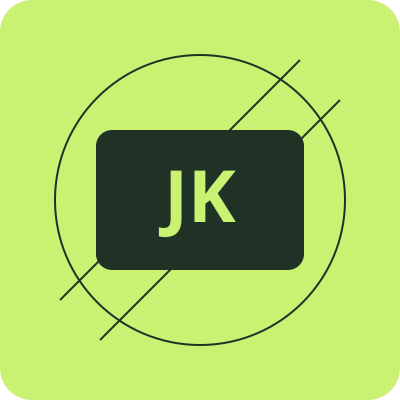

Estrutura
Cinco páginas conectadas, HTML semântico, formulário e elementos multimídia.
Explorar mídias →ESTUDANTE · ANÁLISE E DESENVOLVIMENTO DE SISTEMAS
Sou José Kailon Teixeira da Silva, estudante de Análise e Desenvolvimento de Sistemas. Este portfólio reúne as práticas de desenvolvimento front-end do meu projeto acadêmico.

O PROJETO
Cinco páginas conectadas, HTML semântico, formulário e elementos multimídia.
Explorar mídias →Layouts que se reorganizam conforme a tela, com Flexbox, Grid e CSS mobile-first.
Ver o currículo →JavaScript para desenhar, validar o formulário e lembrar sua preferência de tema.
Experimentar o formulário →